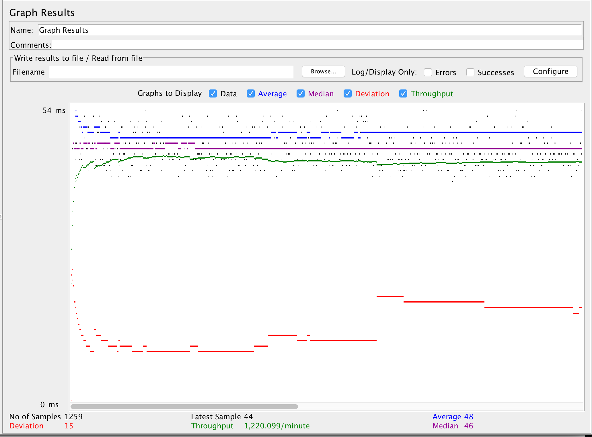
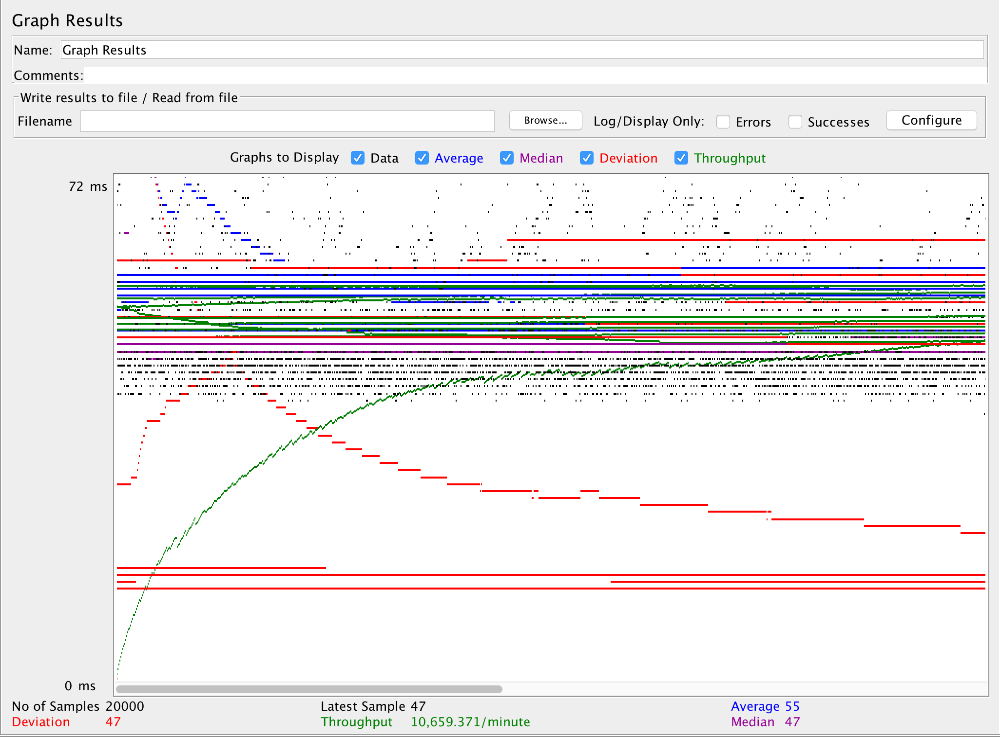
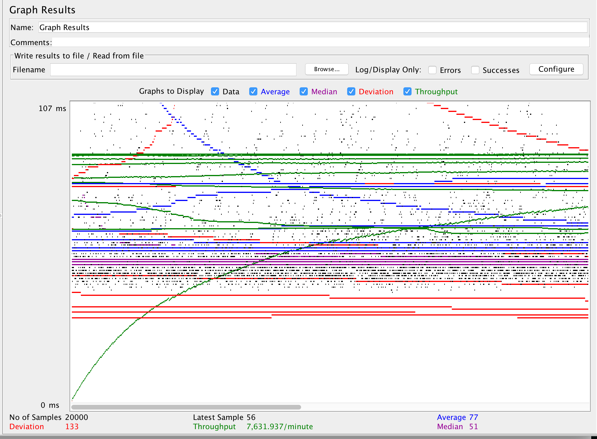
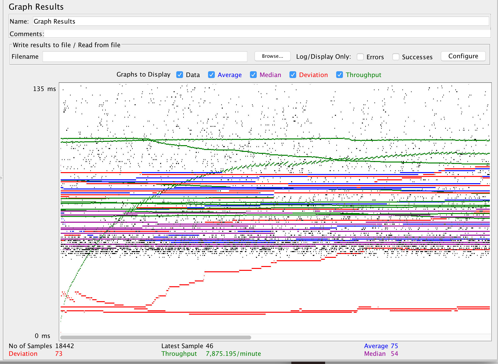
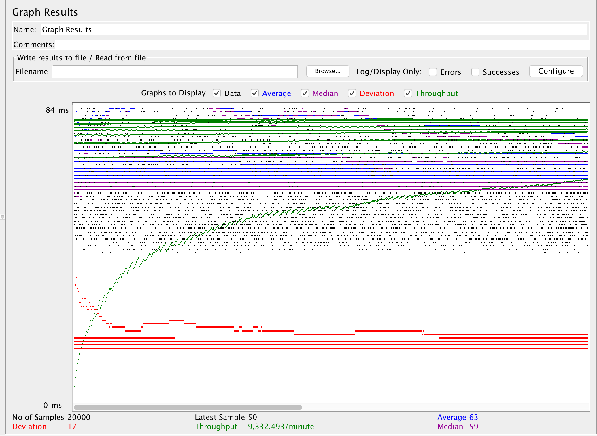
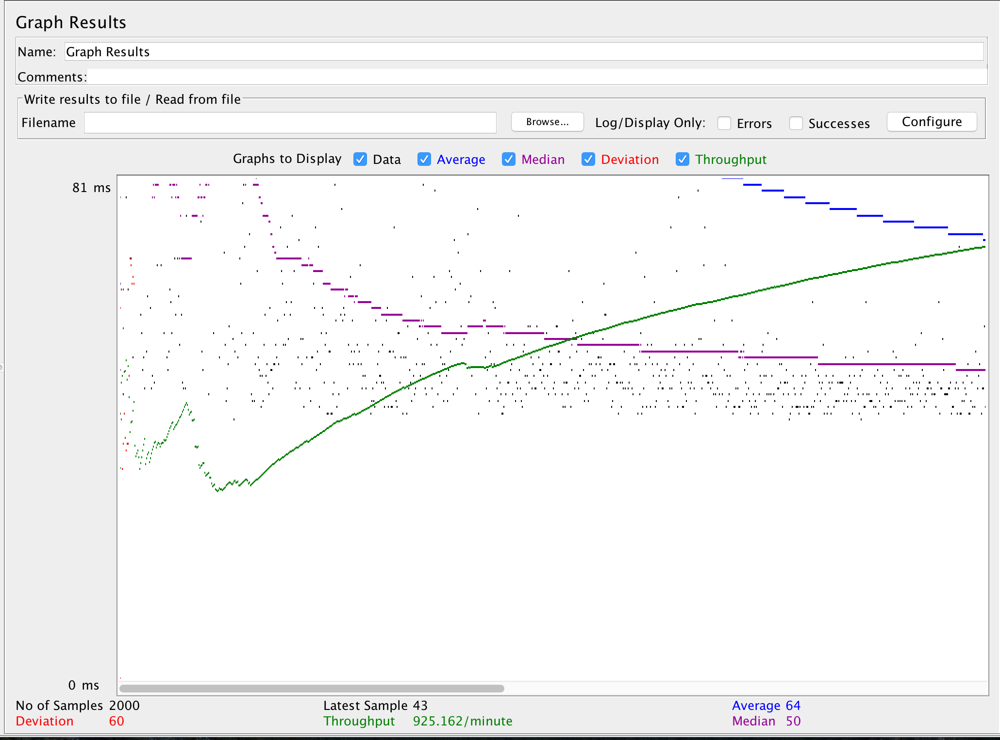
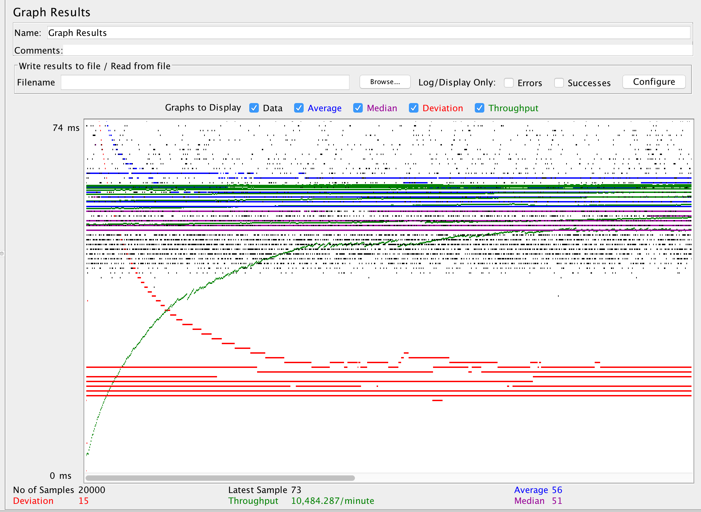
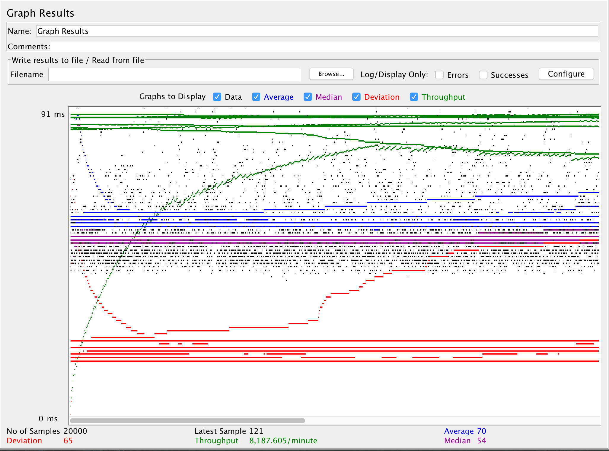
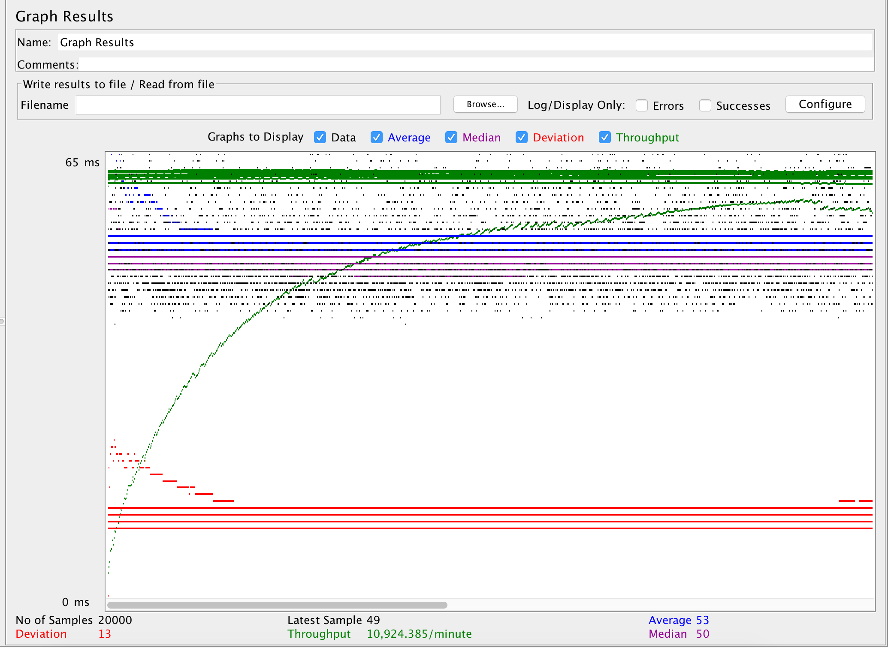

| Single-instance version cases | Graph Results Screenshot | Average JDBC Time(ms) | Average Search Servlet Time(ms) | Average Query Time(ms) | Analysis |
| Case 1: HTTP/1 thread |  | 0.11996828 | 4.651330 | 48 | Network connection overhead was large so that the response time was slow. |
| Case 2: HTTP/10 threads |  | 0.29184 | 2.246159 | 48 | Since the connection pooling gave us open connection to the database the result was queried faster than just having one thread |
| Case 3: HTTPS/10 threads |  | 0.23859 | 5.51636 | 52 | HTTPS has to authenticate one more time so the response time was slower than the other HTTP Coonection. but the actual query time doesn't show much difference |
| Case 4: HTTP/10 threads/No prepared statements |  | 0.24642 | 4.50330 | 49 | without the Prepared statement the query serach time went up about 2 times compared to the other result. Significant difference will occur with more test size |
| Case 5: HTTP/10 threads/No connection pooling |  | 54.08878 | 5.09989 | 70 | with out connection pooling, the resposnse time infliated about 20 time the original results. Connection pooling does make significant difference on connection speed. |
| Scaled version cases | Graph Results Screenshot | Average JDBC Time(ms) | Average Search Servlet Time(ms) | Average Query Time(ms) | Analysis |
| Case 1: HTTP/1 thread |  | 0.10569234 | 5.6341330 | 64 | My Internet connection got somewhat slow so the range went up but the response time of sql execution and connection didnt change much |
| Case 2: HTTP/10 threads |  | 0.4257235 | 2.85299 | 56 | Connections were headed to different places so the aversgage seach servelt time was reduced because of the load hold on one server |
| Case 3: HTTP/10 threads/No prepared statements |  | 0.23859 | 5.342153 | 53 | without the Prepared statement the query serach time went up about 2 times compared to the other result. Significant difference will occur with more test size |
| Case 4: HTTP/10 threads/No connection pooling |  | 43.08878 | 5.340023 | 40 | Same as HTTP without connection pooling, with out connection pooling, the resposnse time infliated about 20 time the original results. Connection pooling does make significant difference on connection speed. |